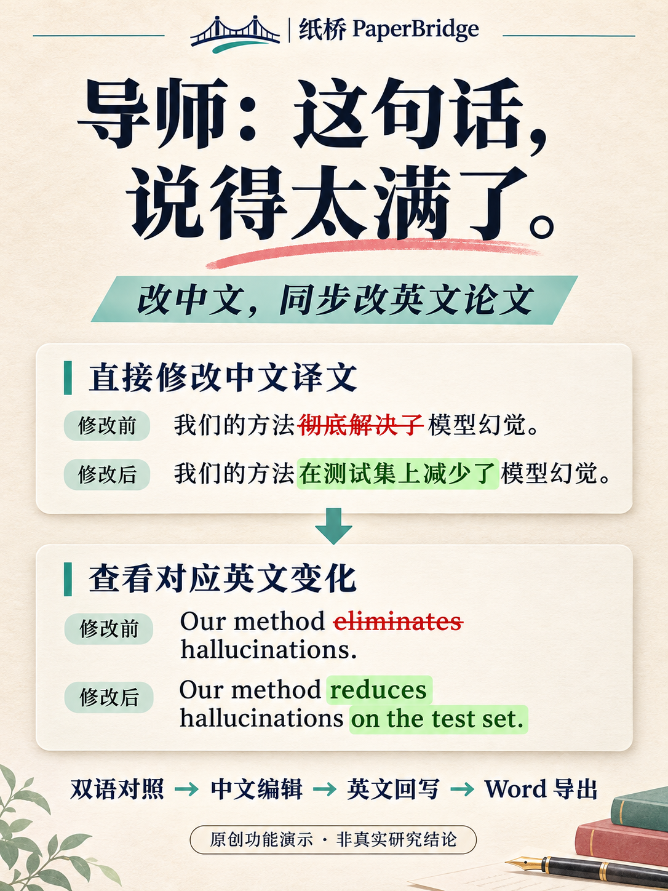
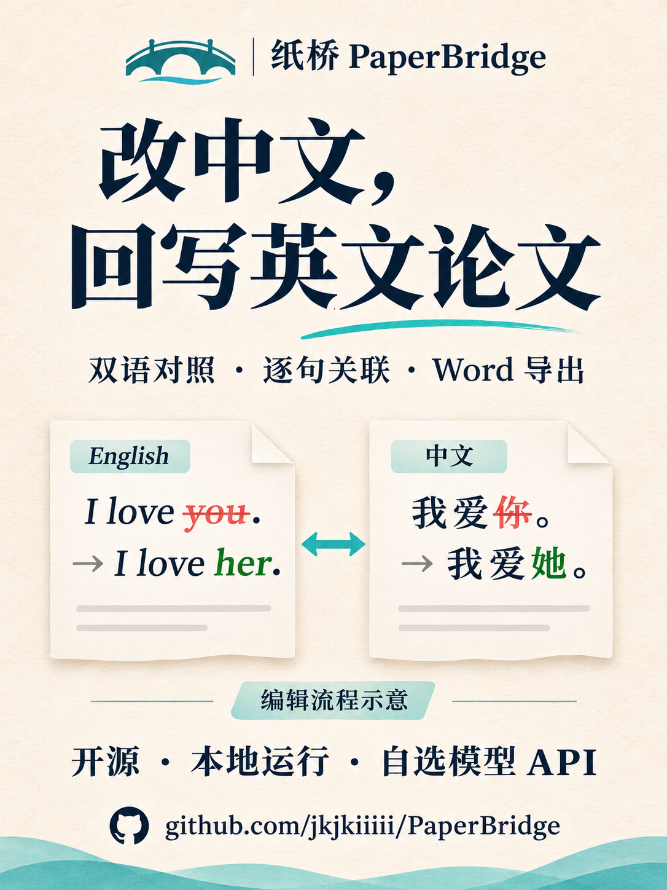
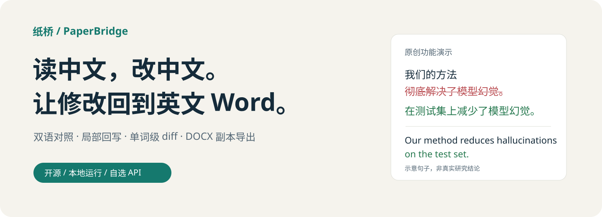
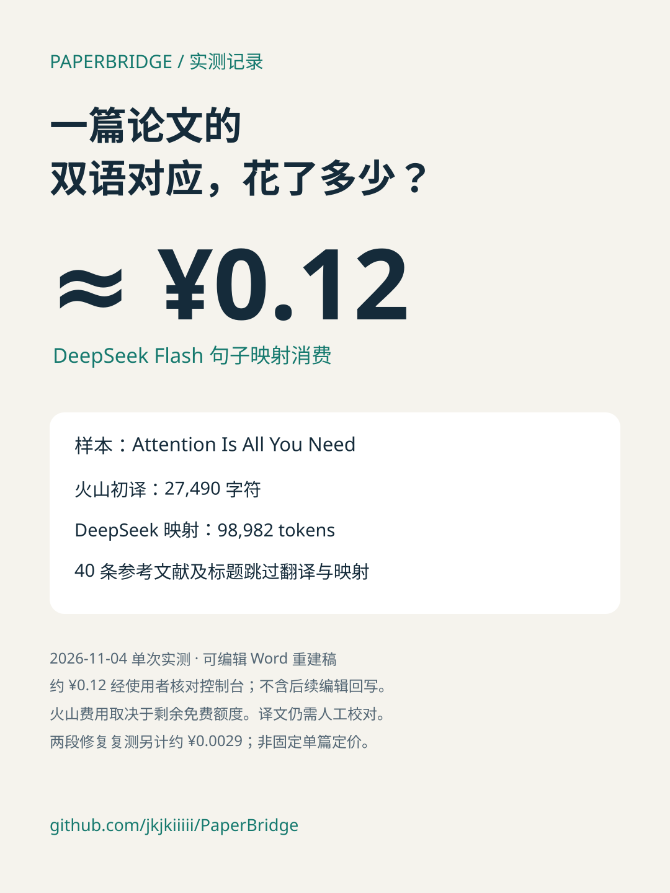

PAPERBRIDGE / 首轮传播设计
导师：这句话，说得太满了。
改中文，同步改英文论文。直接修改中文译文，再核对英文变化。
三渠道文案 · 传播计划与六图分镜
01 / 两种封面方向

首选封面：小红书首图、朋友圈

早期风格草案：不作为主宣传示例
02 / GitHub 首屏横幅

03 / 功能证据与费用案例

真实界面：检查英文增删

真实界面：中文原位编辑

单次实测：作为支持信息，放在功能展示之后
设计提案，尚未发布。封面插画是流程示意；实际功能以软件截图和 README 为准。